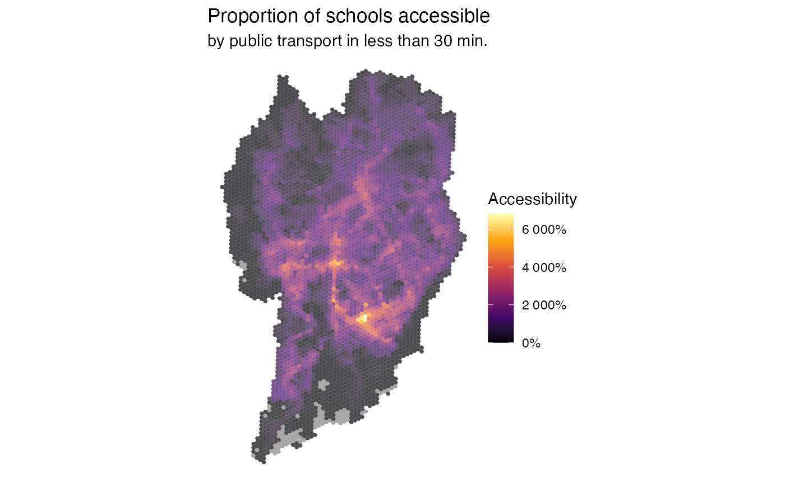

Mapping urban accessibility
Rafael H. M. Pereira ..
2025-01-29
Source:vignettes/access_maps.Rmd
access_maps.RmdAbstract
Mapping urban accessibilityLoad libraries
Download accessibility data
# download aop data
df <- aopdata::read_access(city='Curitiba',
mode='public_transport',
year=2019,
peak = FALSE,
geometry = TRUE,
showProgress = FALSE)Plot map with spatial distribution of access to job opportunities
ggplot() +
geom_sf(data=df, aes(fill=CMATT60), color=NA, alpha=.9) +
scale_fill_viridis_c(option = "inferno", labels = scales::comma) +
labs(title='Number of jobs accessible', fill="Accessibility",
subtitle='by public transport in less than 60 min.') +
theme_void()
Map access to Schools
ggplot() +
geom_sf(data=df, aes(fill=CMAET30), color=NA, alpha=.9) +
scale_fill_viridis_c(option = "cividis", labels=scales::comma) +
labs(title='Number of schools accessible', fill="Accessibility",
subtitle='by public transport in less than 30 min.', fill="N. of schools") +
theme_void()